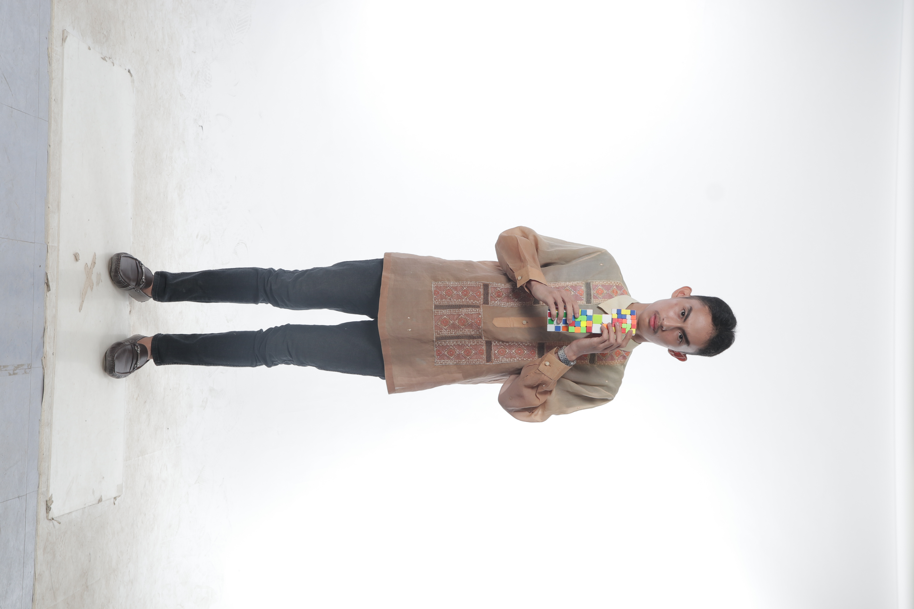
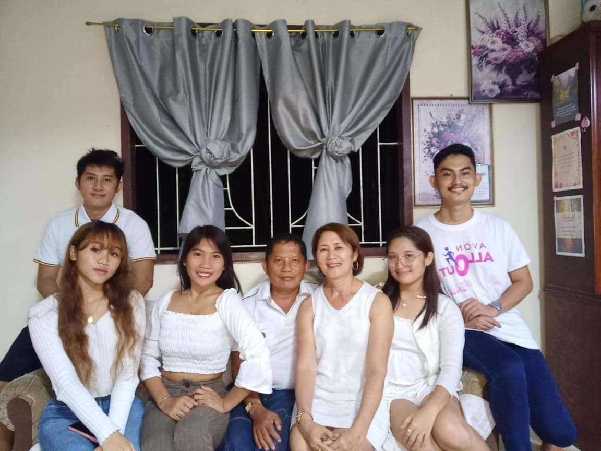

September 7, 2022
Speedcubing is a talent or hobby focusing on rapidly solving a Rubik's cube within seconds.
I compete in many tournaments in Mindanao and sometimes help my family in financial crises. That is the reason why I chose
BSIT as my college course to fullfill my goal to create 3D mods as to help and inspire Filipino inventors.

I was born in 2002, on January of 24th, which cope to my first name, "Jan." I was also born with cardiovascular heart disease, specifically Heart Failure. This condition is the
reason why I look skinny at a very young age.

I love speedcubing. It solved my life as it thrust my career and helped my family financially. I went to other places here in Mindanao and met new friends. Today, I compete in an online tournament
as a restriction in the pandemic occurred. My fellow speedcubers chose BSIT as their college course.

I graduated, as a senior high school, at Immaculate Heart of Mary Academy with the strand of Humanities and Social Sciences. Choosing BSIT is very
challenging for me since HUMSS strand has nothing to do with the field of Information Technology Education.

I enrolled at Davao Oriental State University taking Bachelor of Science in Information Technology. It is my persuasive confident that I can fulfill my dreams as an IT professional and God's will.
Today, I'm a 3rd year student and the hardships and coping learning skills in computer-related terminolgies awaits me.

As I said, I want to be a 3D printing specialist. This job is about creativity and limitless imagination as I am motivated by 3D designs of a Rubik's Cube. In that I can sell these made products, but who knows? In God's will.

I have three siblings; one of them is my twin, and she is currently in Manila, competing in chess. My father is a teacher; my mother is an executive in a cosmetic company, and my brother is an environmentalist.